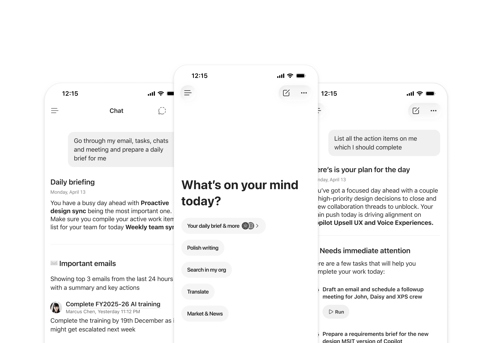
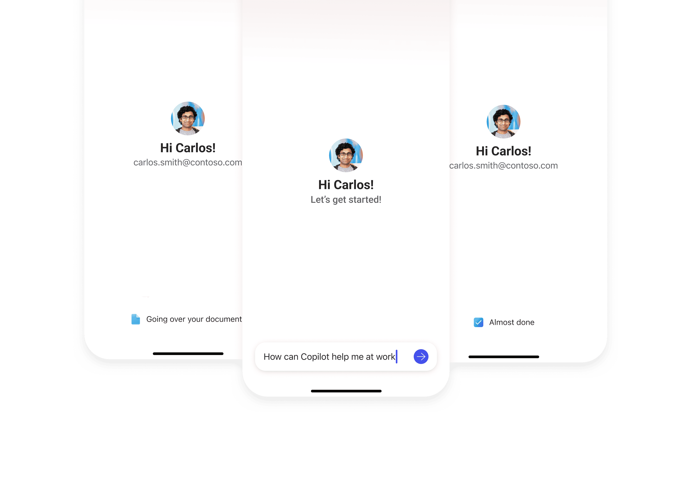
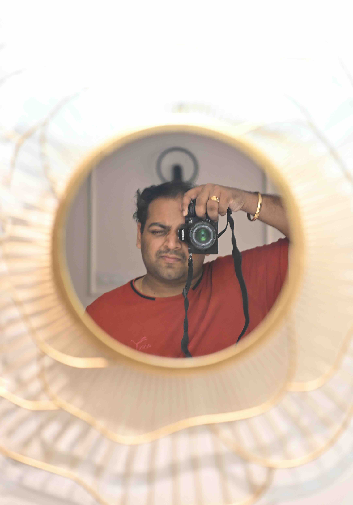

Proactive Assistance: Daily Brief and More
Built a scalable UX framework for proactive AI nudges across Copilot, Outlook and Teams — shifting the product from reactive to ambient intelligence.
View Case Study →Senior Product Designer at Microsoft, crafting purposeful AI-native interfaces for M365 Copilot.

Built a scalable UX framework for proactive AI nudges across Copilot, Outlook and Teams — shifting the product from reactive to ambient intelligence.
View Case Study →
Redesigned the first-run experience for Copilot Mobile — turning a confusing intro into a guided first success that boosted new-user prompt submission and Week-1 retention.
View Case Study →Designed the Dynamic Action Bar — a persistent, context-aware Copilot entry point inside WXP previewers that lifted AI engagement from ~2% to ~15%.
View Case Study →I'm a product designer with 7+ years of experience working at Microsoft, India.
Based out of Hyderabad, India, open to remote and on-site collaborations.

Available for new projects starting Q2 2025. If you have something in mind, let's talk.
Say Hello →